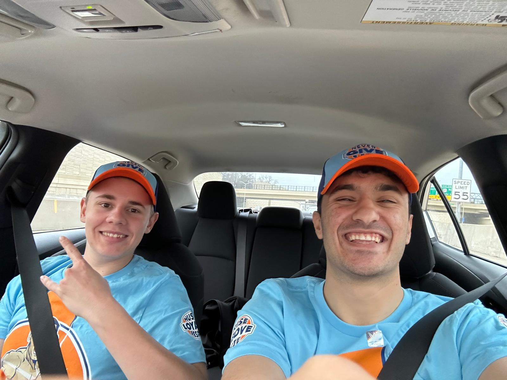
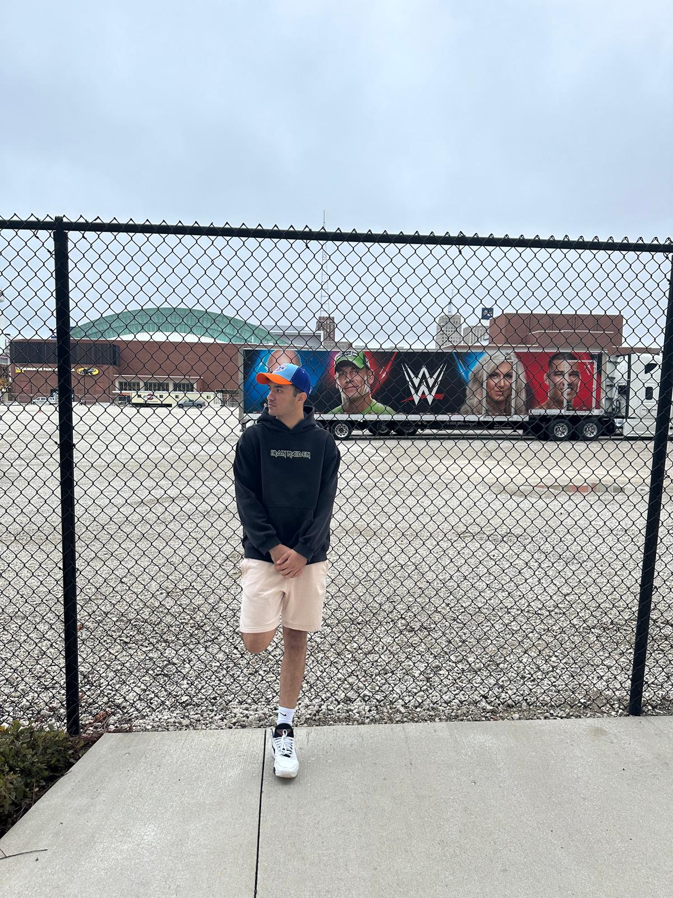
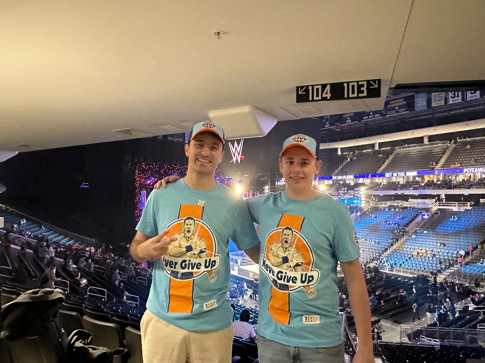

A Childhood Dream Come True
I met Leo, an exchange student from Germany, during our orientation class at Madison College. His grandfather lives in Wisconsin, and he decided to study here for a semester. We quickly connected over our love for soccer.
One day, while chatting after class, I found out that Leo was also a huge fan of WWE—just like me! Even better, he supported John Cena, my childhood hero. Our conversations shifted from soccer to wrestling, and that’s when he told me about an upcoming WWE SmackDown event in Milwaukee. And yes, John Cena would be there.
We didn’t waste a second. We bought our tickets and got matching John Cena shirts and hats. When the day came, I picked Leo up and we hit the road. It was surreal to think I’d finally witness in person what I had only seen on TV growing up.
Since Leo had been to three WWE shows before, he guided me through the experience. Seeing John Cena live, the man who taught me the “Never Give Up” mindset, was powerful. I got emotional knowing he might retire soon. I was lucky to see my hero with my own eyes.
That night wasn't just a wrestling show. It was a dream fulfilled, a memory I’ll hold forever.